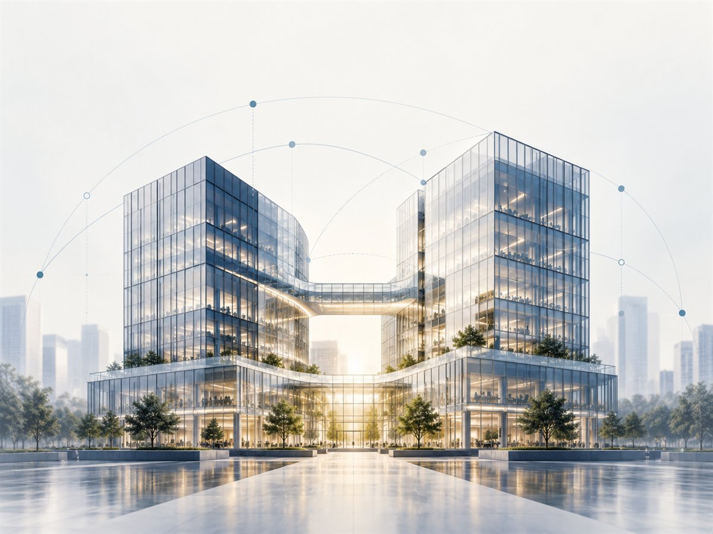

Report · Eight chapters · 20 min read · Mergers & Acquisitions
The Structured Approach to Post-Merger Integration
Boards look to M&A for revenue and cost synergies, and most integrations underdeliver against exactly those targets. Our six-step functional framework covers organisational structure, process, systems, contracts and assets.
- Introduction3 min
- Integration Principles and Key Success Factors3 min
- Organizational Structure3 min
- Process, Organization and Procedures3 min
- Systems and Technology3 min
- Contracts2 min
- Assets1 min
- Key Success Factors2 min